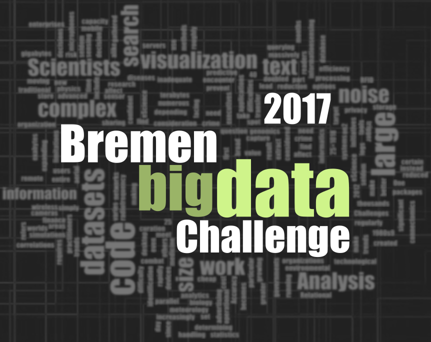

Interpretable High-Level Features for Human Activity Recognition. Hartmann, Y., Liu, H., Lahrberg, S., & Schultz, T. (2022). In BIOSIGNALS 2022. INSTICC, SciTePress.
Forthcoming
Motion Units: Generalized Sequence Modeling of Human Activities for Sensor-Based Activity Recognition. Liu, H., Hartmann, Y., & Schultz, T. (2021). In EUSIPCO 2021 — 29th European Signal Processing Conference. IEEE.


 
CSL-SHARE: A Multimodal Wearable Sensor-Based Human Activity Dataset. Liu, H., Hartmann, Y., & Schultz, T. (2021). Frontiers in Computer Science, 3: 759136.

Hidden Markov Model and Its Application in Human Activity Recognition and Fall Detection: A Review. Xue, T., & Liu, H. (2021). In CSPS 2021 — 10th International Conference on Communications, Signal Processing, and Systems. Springer.
Feature space reduction forhuman activity recognition based on multi-channel biosignals. Hartmann, Y., Liu, H., and Schultz, T. (2021). In Proceedings of the 14th International Joint Conference on Biomedical Engineering Systems and Technologies — Volume 4: BIOSIGNALS, pages 215-222. INSTICC, SciTePress.
TSFEL: Time series featureextraction library. Barandas, M., Folgado, D., Fernandes, L., Santos, S., Abreu, M., Bota, P.,Liu, H., Schultz, T., and Gamboa, H. (2020). SoftwareX, 11:100456. Elsevier.

Feature space reduction for mul-timodal human activity recognition. Hartmann, Y., Liu, H., and Schultz, T. (2020). In Proceedings of the 13th International Joint Conference on Biomedical Engineering Systems and Technologies — Volume 4: BIOSIGNALS, pages 135–140. INSTICC, SciTePress.
A Wearable Real-time Human Activity Recognition System using Biosensors Integrated into a Knee Bandage. Liu, H., & Schultz, T. (2019). In Proceedings of the 12th International Joint Conference on Biomedical Engineering Systems and Technologies — Volume 1: BIODEVICES, pages 47–55. INSTICC, SciTePress. (Best Paper, Student Author).
ASK: A Framework for Data Acquisition and Activity Recognition. Liu, H., & Schultz, T. (2018). In Proceedings of the 11th International Joint Conference on Biomedical Engineering Systems and Technologies — Volume 3: BIOSIGNALS, pages 262–268. INSTICC, SciTePress.
Bremen Big Data Challenge 2017: Predicting University Cafeteria Load. Weiner, J., Diener, L., Stelter, S., Externest, E., Kühl, S., Herff, C., Putze, F., Schulze, T., Salous, M., Liu, H., Küster, D., and Schultz, T. (2017). In Proceedings of the 40th Annual German Conference on AI, Dortmund, Germany (KI 2017). Springer International Publishing.

Capacity of Cooperative Ad Hoc Networks with Heterogeneous Traffic Patterns. Liu, H., & Wang, X. (2011). In ICC 2011 — IEEE InternationalConference on Communications, pages 1–5. IEEE.
|


 Fraunhofer Institute for Telecommunication, Heinrich Hertz Institute, HHI
Fraunhofer Institute for Telecommunication, Heinrich Hertz Institute, HHI
 Bauerfeind AG
Bauerfeind AG